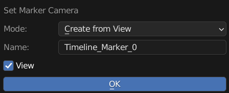
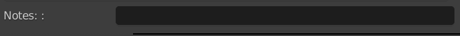
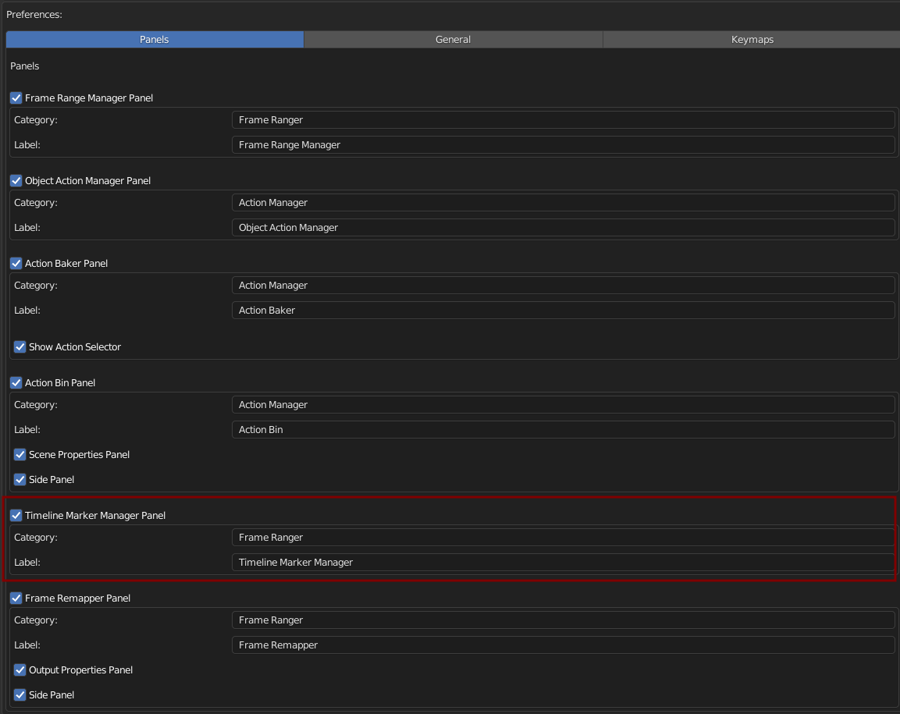

Timeline Markers Manager
Timeline Markers List Present Timeline Markers in a List Form, making it easier to manage.

Set Camera
Bind Camera to Timeline Marker, Use to Switch Scene Camera
Mode: Camera to Add
Create Camera From View: Create Camera From View
Active Camera: Active Selected Camera
Camera: Pick Camera
Mode = Create From View:
Name: New Camera Name
View: View Camera After Creation
Mode = Camera:
Show All Object: Camera Picker no Longer Limit to Camera Object
Camera: Camera to Bind to Marker
Notes
Just a String Field For you to Write Comments or Notes
Preferences
You Can Enable / Disable, Rename Category, and Rename Label in Preferences
Default Category: Frame Ranger
Default Label: Timeline Marker Manager
